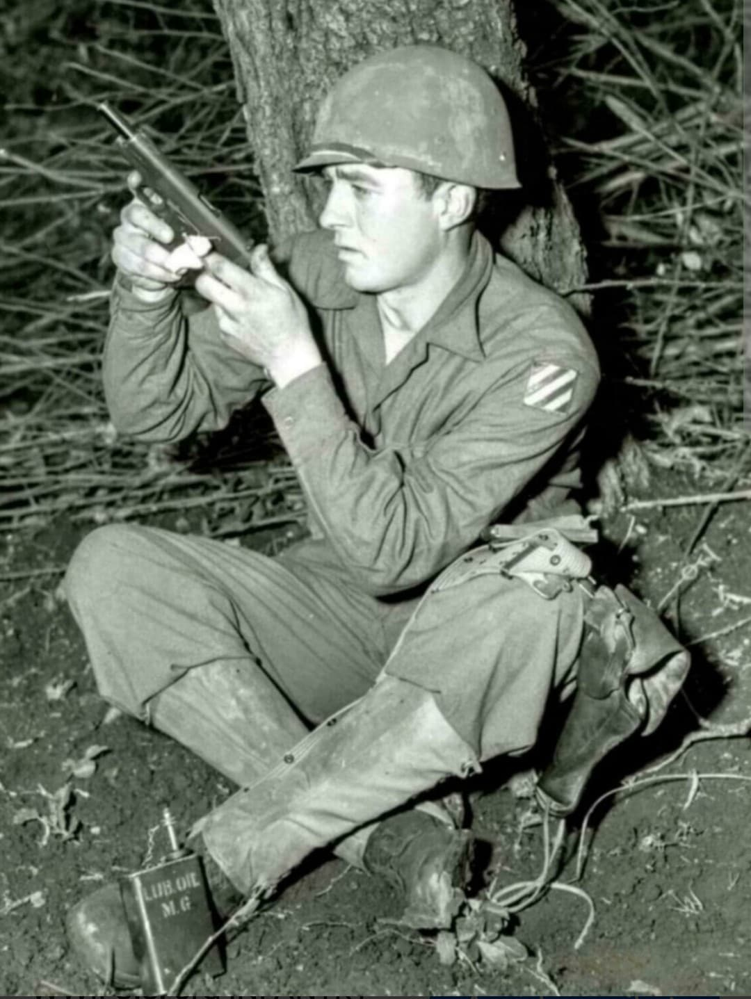
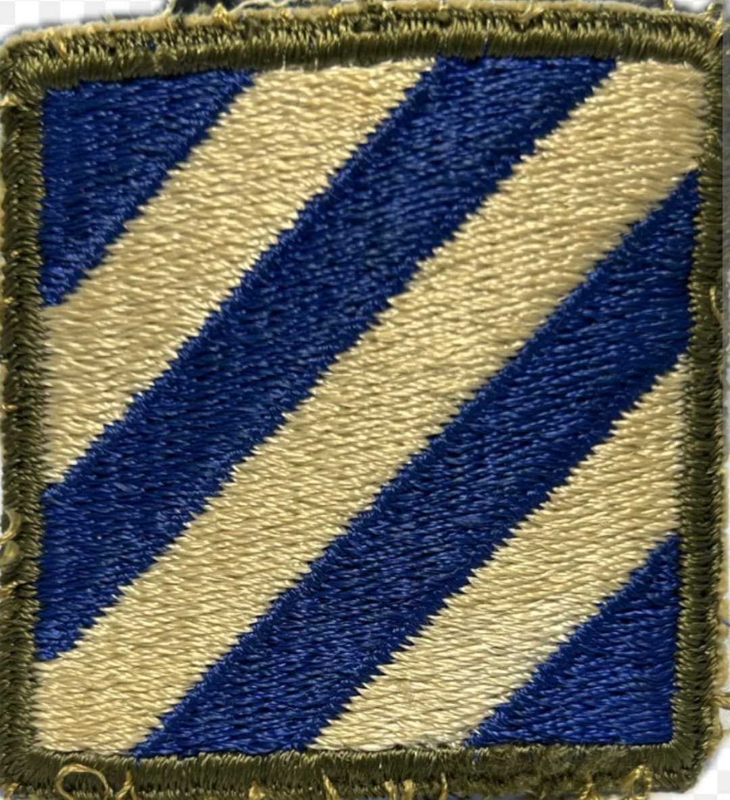
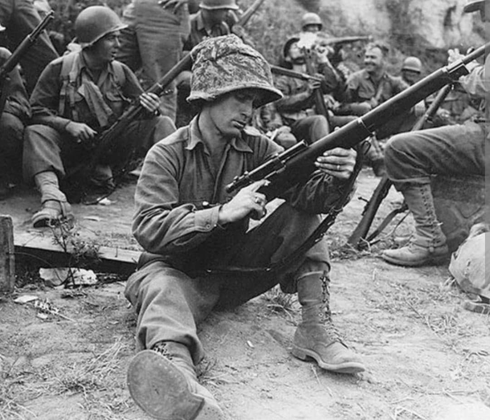
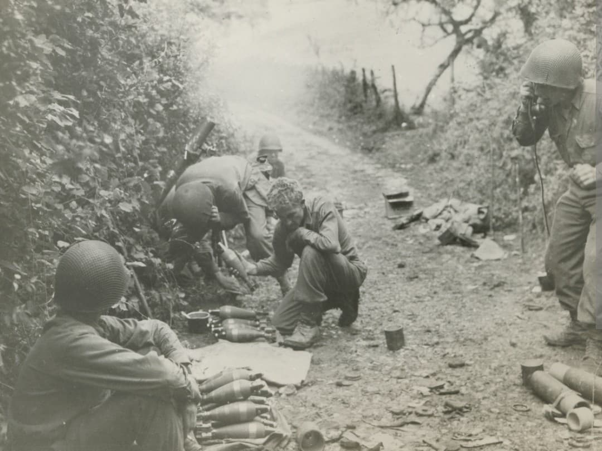

L'une des unités les plus décorées de l'US Army, du débarquement en Afrique du Nord jusqu'au Nid d'Aigle d'Hitler

La 3rd Infantry Division de l'armée américaine, surnommée “Rock of the Marne”, est l'une des divisions d'infanterie les plus légendaires et les plus lourdement éprouvées de la Seconde Guerre mondiale.
Seule division américaine à avoir affronté l'Axe sur tous les fronts européens (Afrique du Nord, Sicile, Italie, France et Allemagne), elle a participé à quatre débarquements amphibies majeurs et accumulé un palmarès de citations militaires sans équivalent.
Créée en novembre 1917, la division gagne son surnom lors de la Seconde bataille de la Marne en juillet 1918, lorsqu'elle stoppe l'offensive allemande alors que les unités voisines se repliaient. Sa devise officielle est “Nous Resterons Là”.
Son insigne d'épaule est composé d'un carré bleu sur lequel figurent trois bandes diagonales blanches, symbolisant les trois grandes offensives auxquelles la division a pris part durant la Première Guerre mondiale.

La 3rd Infantry Division entame son parcours opérationnel en novembre 1942 lors de l'Opération Torch en Afrique du Nord (débarquement à Fédala en France vichyste). En juillet 1943, elle participe à l'Opération Husky en Sicile, capturant Palerme en un temps record grâce aux marches forcées légendaires de ses hommes (la « marche de la Marne »).
Transférée en Italie continentale, elle subit de très lourdes pertes lors de la traversée de la ligne Volturno, puis lors du débarquement sanglant d'Anzio en janvier 1944, résistant pendant des mois aux féroces contre-attaques allemandes.

Le 15 août 1944, la division débarque sur les plages du Var dans le cadre de l'Opération Dragoon (Débarquement de Provence). Elle remonte rapidement la vallée du Rhône, libérant Cavalaire, Saint-Tropez et Colmar.
Pendant l'hiver 1944-1945, engagée dans les combats d'une dureté extrême dans les Vosges puis dans la réductrice de la Poche de Colmar, la division s'illustre de nouveau en repoussant l'opération Nordwind. C'est durant ces combats que le soldat **Audie Murphy**, héros le plus décoré des États-Unis, accomplit ses faits d'armes légendaires.

En mars 1945, la 3rd Division franchit le Rhin et s'enfonce au cœur du Reich. Elle participe à la prise de Nuremberg après de violents combats de rue.
Au début du mois de mai 1945, elle capture Salzbourg avant d'atteindre Berchtesgaden et d'investir le « Nid d'Aigle » (Kehlsteinhaus) d'Adolf Hitler dans les Alpes bavaroises, marquant ainsi la fin des combats en Europe.
Avec plus de **25 900 pertes** au total (dont environ 4 900 tués au combat) à travers 531 jours de combat effectif, la 3rd Infantry Division détient l'un des bilans humains les plus lourds parmi les divisions de l'US Army.
Au total, **51 soldats** de la 3rd Infantry Division ont reçu la Medal of Honor durant la Seconde Guerre mondiale, un record absolu pour une division américaine.
Page du Musée HOP WW2 – Section États-Unis & Unités d'Élite